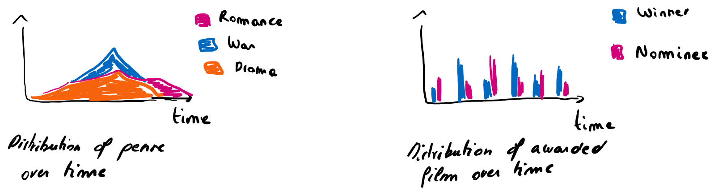
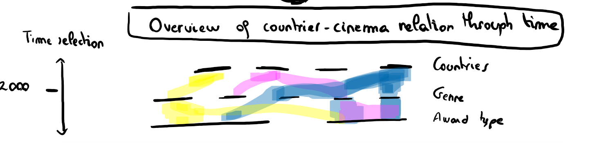

What can we learn from Cinema?
Context- Which countries are represented in which film ceremonies over time
Introduction
When the Oscar ceremony become questionnable, what can we learn from Cinema? This work is an attempt to illustrate and ask multiple question about cinema, culture, tendance in general. From a serie of datasets, we manage to ask collected data about tacit rules that are often kept deeply into our mind.
How to use
Here we would tell you how to interact with the plot below. Sadly, it is not interactive at this stage of the project. Please imagine that the plot is interactive and that clicking on it activates captivating animations.
Exploratory -Evolution of genres and awards in a specific country

Conclusion- Overview of countries trends through cinema awards
After a generalisation over all countries and awards, how evolve the repartition of countries countries and film category produced by them evolved through time view from the number of nomination/winners in prestigious film ceremonies.

Data Visualisation project